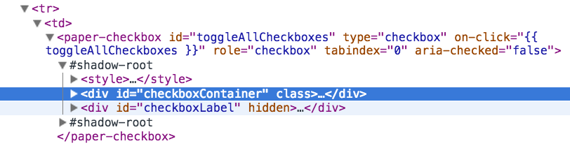

Web Components
Google map's API
// This example adds a marker to indicate the position
// of Bondi Beach in Sydney, Australia
function initialize() {
var mapOptions = {
zoom: 4,
center: new google.maps.LatLng(-33, 151)
}
var map = new google.maps.Map(document.getElementById('map-canvas'),
mapOptions);
var image = 'images/beachflag.png';
var myLatLng = new google.maps.LatLng(-33.890542, 151.274856);
var beachMarker = new google.maps.Marker({
position: myLatLng,
map: map,
icon: image
});
}
google.maps.event.addDomListener(window, 'load', initialize);
Web Component
Position and Zoom
Marker
Hello!

Google Map
Component's attributes
- mapType (roadmap, satellite, hybrid, terrain)
- version (version of the Google Maps API to use)
- disableDefaultUI
- zoomable
- maxZoom
- minZoom
- ...
Component's events
- google-map-ready
- google-map-click
- google-map-dblclick
- google-map-drag
- google-map-dragstart
- google-map-dragend
- google-map-mousemove
- google-map-rightclick
Web Components
The Shadow DOM
- sub-DOM trees
- encapsulate functionality for individual components
- works just the same as the standard DOM (css, js)
- reuse much easier

HTML Templates
- separate and reuse HTML segments
- without the need of a JavaScript framework (HTML5 standard)
link rel="import" href="web-component.html"
Custom Elements
Current WebComponent support
Why are WebComponents important?
Risk free plugins
When adding third party components to your web application you won’t need to worry about it breaking or causing issues with other parts of your app.
One size fits all
Forget writing plugins for jQuery, directives for AngularJS and addons for Ember.js. Write once use many.
Forget controllers, forget directives and forget a million scope objects - just give me the services and probably some routing.
* Angular 2.0 has built in component supportTraditional and Declarative HTML
Gmail's HTML
Polymer
Allows you to feel power of the web components.
* X-Tag, Polymer, BosonicUsing Polymer web components
- Install (Bower)
- webcomponents.min.js
- HTML import
- Use it!
Install
polymer-project.orgwebcomponents.min.js
elements/simple-element.html
Hello!
head tag
body
Browser
Two way data-binding
Hello, {{name}}!
Two way data-binding
Styles and scripts
// your content here
Features
- Attributes
- Element lifecycle methods
- Published properties
- Data binding
- Automatic node finding
- Observing properties
- Firing custom events
- Extending other elements
- ...
Polymer's elements
- Core elements
- Paper elements
Core elements
core-ajax, core-animation, core-drag-drop, core-dropdown, core-dropdown-menu, core-field, core-icon, core-icon-button, core-input, core-label, core-localstorage, core-menu, core-submenu, core-range, core-toolbar, core-tooltip, ...
core-ajax
Paper elements
paper-button, paper-checkbox, paper-dialog, paper-dropdown, paper-input, paper-progress, paper-radio-button, paper-ripple, paper-shadow, paper-slider, paper-spinner, paper-tabs, ...
paper-input
paper-checkbox
paper-tabs
Production ready?
NO
Official status for now: DEV PREVIEW
On GitHub
- 8889 stars
- 809 forks
- Issues: 354 open, 792 closed
StackOverflow
StackOverflow
Resources
First three steps: